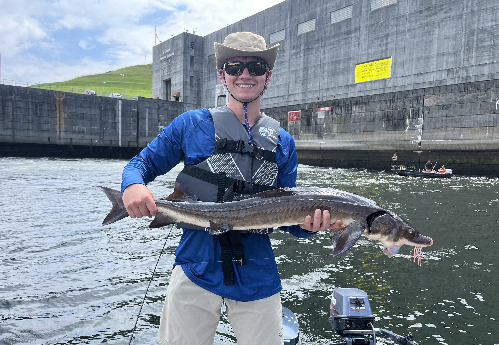
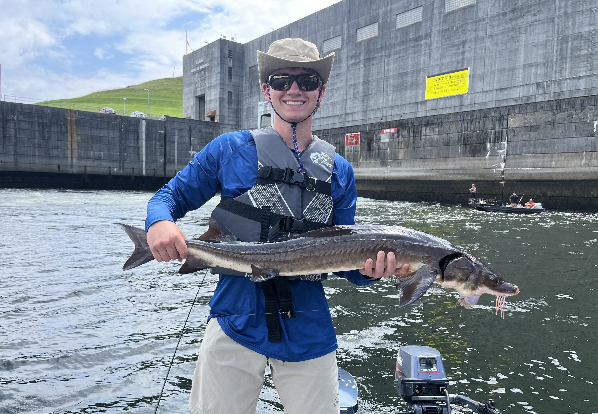

Hobbies & Interests
Playing Guitar & Music
I started playing guitar during COVID as a creative outlet while everything slowed down. What began as a solo hobby eventually turned into a band called Toucan Tango. We have four members, and I started the group in April of last year. Since then, we’ve played five live shows, and music has become one of my favorite ways to collaborate creatively and unwind outside of technical work.
Fishing
Fishing has been part of my life for as long as I can remember. I enjoy both bass fishing and saltwater fishing, and I’ve spent countless early mornings and long days on the water. I rebuilt a 9 foot aluminum jon boat in the summer of 2024, and I’m looking forward to many more seasons of fishing and boat projects in the years to come.
 

Bow Hunting
I began bow hunting during COVID, teaching myself from scratch since no one in my family hunts. I spent a lot of time shooting in my backyard when I couldn’t see friends, gradually improving through trial, research, and repetition. Today, I look forward to spending fall mornings in the woods — it’s one of the most grounding and focused experiences I’ve found.


Baseball
Baseball has been a constant throughout my life. I played Japanese Little League growing up, where practices could last up to nine hours on weekends. That environment shaped my discipline and work ethic early on. Today, I’m the President of the University of Michigan Club Baseball team, and we’ve made it to the World Series each of the last two years. Baseball continues to be a core part of how I lead, compete, and build teams.